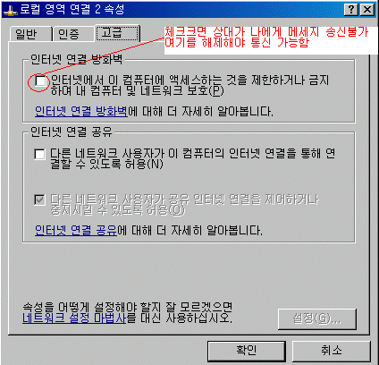
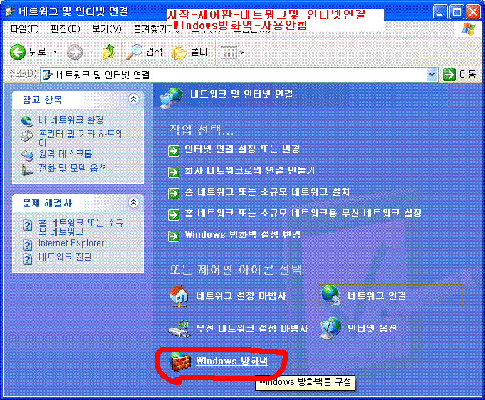
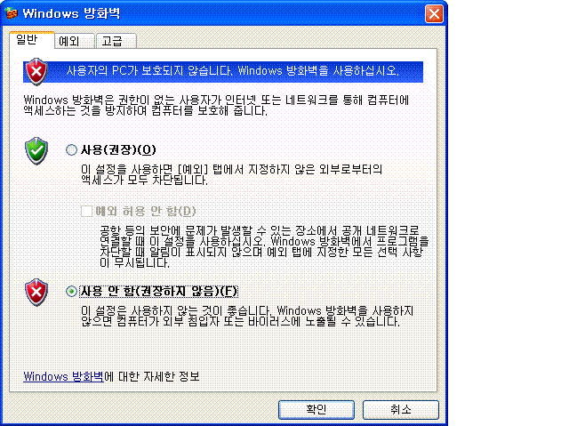

FAQ 1
Q: MessagePopup II를 저희 회사에서 상용할
수 있나요. 구입을 해야하나요?
A: 어떠한 곳에서든지 무료로 사용할 수 있습니다.
어떠한 제약도 없습니다.
많은 분들이 사용해주시고 유용하게
사용하시면됩니다. 구입할 필요없습니다
단, 메세지팝업을
판매할 수없으며, 어떠한 프로젝트의 개발 프로그램으로 묻어 들어갈
수
없습니다. 그렇지만 고객들에게 무료프로그램으로 소개해서 사용하게 하는것은 환영합니다.
FAQ 2
Q : 통신을 할려면 상대의 IP를 등록해야하나요
A : 절대
그렇지 않습니다. 같은 랜에서는 IP네트워크대가 같기 때문에 설치만으로도
통신이 가능합니다. Just Install & Send
FAQ 3
Q : 네트워크 설정 예제를 알고 싶습니다. (다른네트워크
설정 및 IP버튼의 용도 관련 설명)
A :
같은 LAN상에 다른 네트워크 (앞 세자리 X.X.X 가 다른
경우)
example>
당신의 컴퓨터A = 10.10.10.2
같은
네트워크 컴퓨터 B = 10.10.10.3
다른 네트워크 컴퓨터
C,D = 10.10.20.3 , 10.10.20.4
다른 네트워크 컴퓨터들S
= 10.10.30.1 ~10.10.30.254
1)먼저 ping 테스트로 통신가능한지를 확인합니다.
도스 command창에서
C:> ping 10.10.20.3
C:> ping 10.10.30.1
를
해서 reply가 오면 통신이 되는 것으로 간주합니다
2) 현재
다른 네트워크가 10.10.20.X 와 10.10.30.X 가 존재합니다.
(1) 이경우 설정-> 네트워크탭에
다른네트워크주소에 10.10.30 만 입력합니다.
(2)
10.10.20.3과 10.10.20.4 두개만 존재하는 네트워크에 모두
통신할 필요가 없을 경우
또는
10.10.20의 네트워크 주소의 사용자들 모두에게 나의 대화명을
알릴필요없고 C,D컴에만
알리길
원할경우
 ->
10.10.20.3 , 10.10.20.4 두개 주소를 입력후 [+]버튼를
누릅니다.
->
10.10.20.3 , 10.10.20.4 두개 주소를 입력후 [+]버튼를
누릅니다.
(3) 설정을 완료 후  를 눌러 접속자 검색을 합니다.
를 눌러 접속자 검색을 합니다.
* 물론 10.10.30 도 다른 네트워크 설정에
입력해도 됩니다.
하지만
다른 네트워크 검색을 모두 하기 때문에 시간이 많이 걸립니다.
굳이 10.10.30 네트워크 대에
통신을 원하는 컴이 적을 경우 IP설정 만으로
통신이
가능하게 됩니다.
C,와 D의
컴에서는 어떻게 해야 할까요?
다른
네트워크에 10.10.10 과 10.10.30을 모두 적으면 되겠죠
S들은 10.10.10.X는 다른 네트워크에
10.10.20.3 과 10.10.20.4는 IP설정에 넣어주면 됩니다.
여러분의 LAN설정에 맞게 구성하시기 바랍니다.
FAQ 4
Q : 접속자 목록창에 몇명의 사용자들이 보이지 않습니다. 보내는건 되는데 받지를 못합니다.
A : 1.첫째, 상대의 메세지 팝업의
버젼이 2.X 대 이고 당신은 3.X 버젼 아닙니까. 2.X와 3.X는 호환되지 않습니다.
2. 설정-> network tab -> my network 이 서로
X.X.X 가 같나요. 반드시 같아야함
설정-> network tab -> my network 이 서로
X.X.X 가 같나요. 반드시 같아야함
3.Dos command
창에서. ping X.X.X.X [상대 ip].를 해서 reply가 잘오는지 확인합니다.
4.혹시
다른 프로그램이 메세지팝업과 UDP port 번호와 같은 번호를 사용하고 있다면
Dos command창에서 . 'netstat -a'를
쳐서 사용중인 포트 번호를 확인합니다.
[기어]button-> network tab 에서
'B' ~ 'F'중 한개로 동일하게 변경후 테스트해보세요
5. Window XP 이후 버전부터 윈도우 방화벽을 사용합니다.
방화벽은 프로그램이 네트워크 사용하는 것을 차단합니다.
그래서, 메세지 팝업을 사용하려면 방화벽의 개인 네트워크 차단을 해제해야 합니다.
기본적으로 처음 메세지팝업을 설치하면 메세지팝업이 실행되면 보안 네트워크 차단 허용창이 뜹니다
이때, MsgPopup의 차단해제(XP) 개인네트워크 체크 후 액세스허용(Win10, etc)
만약, 첫실행시 해제를 안 해주었다면 통신이 안돼서 사용자목록이 안뜹니다
해결책1) 윈도우 제어판 ( 시작-제어판, 윈10경우 시작아이콘 오른클릭-제어판) - 보안센터 (시스템 및 보안)-방화벽
XP 방화벽-예외 탭- MsgPopup 체크 - 확인 , 목록에 MsgPopup이 없으면 프로그램 추가 클릭해서 MsgPopup 추가
Win10, Etc 방화벽- 방화벽에서 앱허용- 설정변경 클릭-MsgPopup 이름 개인 공용 체크 -확인
(목록에 MsgPopup 없을 시 다른앱 허용클릭- MsgPopup 추가)
Windows XP 그림 설명
Windows 10 그림 설명
해결책2) 윈도우 방화벽 사용안함
Windows XP 경우
시작 => 제어판 => 네트워크,
전화접속 연결 => 사용중인 LAN 어댑터의 속성(등록정보) => 고급 Tab
->인터넷
연결 방화벽에 체크 해제해야합니다. (사용안함)
이것이
체크되어 있으면 상대가 나에게 메세지를 못보냅니다. 
Window XP SP2 (서비스팩2)의 경우 (아래 셋중한가지 방법으로 방화벽해제)
시작-제어판-네트워크및 인터넷연결-Windows 방화벽-사용안함
또는 시작-내 네트워크환경-네트워크연결보기- Windows 방화벽설정변경 -사용안함
또는 시작-내 네트워크환경-네트워크연결보기- 해당 로컬영역연결 더블클릭- 고급탭- Windows 방화벽-설정-사용안함


윈도우 XP 이상
시작=> 제어판 -시스템 및 보안 => Window 방화벽 => 좌측메뉴 Window 방화벽 설정 또는 해제- Windows 방화벽 사용안함 선택
6.만약
IP가 Dynamic IP(DHCP) 동적IP라면 , 메세지팝업을 시스템 트레이에서 오른클릭->
종료하기 후
시작->시작프로그램->messgaePopup을
다시 실행시켜 줍니다.
왜냐하면
메세지팝업은 PC의 IP가 언제 설정되었는지 자동으로 알 수 없기 때문에 시작시에만
인식하므로
중간에 IP가 설정된
후에는 메세지 팝업은 현재의IP를 인식할 수없습니다. 그래서 다시 시작한것 입니다.
FAQ 5
Q : 메세지팝업은 TCP/IP의 어느 포트 번호를
사용하나요?
A : TCP port : 6713 6715
UDP 6711(A group) ~ 6716(F group)
FAQ 6
Q : 랜카드 두개를 사용하는데 설정은 어떻게
해야하나요.
A : 1. 설정-> 네트워크 탭에서 MY 네트워크로 나오는
네트워크가 메세지팝업을 사용할려는 네트워크인가요?
그렇지 않다면 랜카드 IP와 케이블을
서로 교체 해보세요.
이유는
컴퓨터가 한개 랜카드를 우선 하는 네트워크로 인식하는데
이것을 메세지팝업이 이용하기 때문입니다
그래서
바꿀 수 있다면 우선하는 랜카드에서 메세지팝업을 사용하게
해주면 됩니다.
2. 교체가 불가능 하다면 설정->네트워크 탭에서
다른네트워크에 My Netowork에 나오지 않는 다른네트워크
주소를
입력해 주시고  [접속자 갱신] 버튼을 눌러
주세요
[접속자 갱신] 버튼을 눌러
주세요
FAQ 7
Q : 랜카드가 하나인데 저희 LAN에는 서로 ping이
안되는 두개 네트워크가 존재합니다.
통신할 수 없나요.
A : 할
수 있습니다. 윈도우 2000이나 Xp 이상이라면
시작 => 제어판 => 네트워크,
전화접속 연결 => 사용중인 LAN 어댑터의 등록정보 => TCP/IP - 들록정보 > 고급
버튼
당신의 네트워크 주소의 IP이외에
다른 네트워크의 IP한개를 추가 합니다.
 설정->네트워크 탭에서
다른네트워크에 아까
다른 네트워크 주소를 입력합니다.
설정->네트워크 탭에서
다른네트워크에 아까
다른 네트워크 주소를 입력합니다.
결과적으로
두개의 네트워크의 주소를 컴퓨터가 가지고 있는 것이지요.
FAQ 8
Q : 동일 LAN상 같은 네트워킁에 저희와
상관없는 사용자들이 있습니다. 접속자목록에 안보이게 할 수 없나요
A : 당연히
리스트에서 분리가 가능합니다.
 설정-> network tab -> 통신그룹을 다른 그룹
B 로 옮깁니다.
설정-> network tab -> 통신그룹을 다른 그룹
B 로 옮깁니다.
자신과 통신할려는 사람들은 모두 B로
옮기면 됩니다.
기본 메세지팝업설치시 A그룹으로
설정되므로 다른 분들은 A그룹이므로 통신할 분들만 B로 같이 옮기면 됩니다.
FAQ 9
Q : 다시 설치하면 기존 로그나 config파일은 어떻게 되나요.
A : 다시 설치할때 Uninstall을 하게 되면 모든 로드나 디렉토리 다운방 모두 삭제시킵니다.
모두 삭제를 원치않는다면, 시스템 트레이를 오른클릭->종료하기 후, 설치파일을 인스톨하면
모든 기존 로그, config, 다운파일등 모두 보존됩니다.
FAQ 10
Q : 다른 컴퓨터에 기존 MsgPopup을 옮길 수 없나요
A : 1. 기존 컴퓨터의 설치된 방(기본 C:\Program Files\MessagePopup)밑의 모든 파일을 압축합니다.
(다운방의 위치를 변경하셨으면 그방을 따로 백업하세요)
2. 새 컴퓨터에 MessagePopup II 설치파일로 설치합니다.
3. 새로 설치된 방(기본 C:\Program Files\MessagePopup)밑에 압축했던 파일을 덮어 씁니다.
메세지팝업은 컴퓨터 레지스트리를 건드리지 않으므로 쉽게 파일만 이동함으로써 이용가능합니다